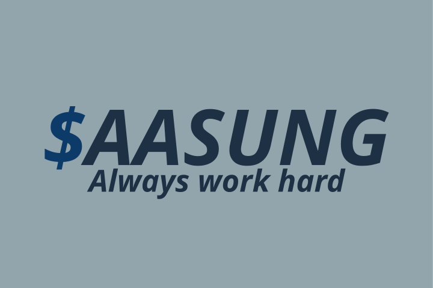

Коротко о нас
Компания $AASUNG — это ведущий интернет-магазин, специализирующийся на продаже и сервисном
обслуживании бытовой техники. Мы гордимся тем, что предлагаем нашим клиентам широкий ассортимент
высококачественных товаров, включая холодильники, стиральные машины, плиты, пылесосы и многое
другое.
Компания $AASUNG стремится сделать жизнь наших клиентов проще и комфортнее, обеспечивая первоклассное обслуживание и поддержку на каждом этапе взаимодействия. Мы ценим доверие наших клиентов и работаем над тем, чтобы каждый покупатель оставался доволен своим выбором.
Наша история
Великие основатели компании: Бичеслав Вуланников и Алексей Турмс в 2006 году запустили набирающий
тогда обороты бизнесс - компьютерный сервис. Все начиналось с небольшого ларька в переходе на
станции.
Однако уже к 2010 году благодаря сотрудничеству с Максимом Боевым-Меркавцем, который помог с
написанием сайта компании $AASUNG - сервис разросся в самый первый магазин бытовой техники будущей
крупной сети. Магазин отличался качеством товаров и лояльной политикой гарантийного обслуживания.
Компания росла. С каждым годом открывалось все больше магазинов в разных частях страны и мира. Создавалась экосистема, улучшалась политика и лояльность к клиентам. На момент 2025 года открыто более 500 магазинов $AASUNG по всему миру. Множество партнеров и спонсоров уже присоединились к $AASUNG. Сеть продолжает расширяться и радовать своих клиентов.
Наши преимущества
Широкий ассортимент - В нашем каталоге представлена техника от ведущих мировых производителей, что
позволяет каждому клиенту найти идеальное решение для своего дома.
Качество и надежность - Мы тщательно отбираем продукцию, гарантируя высокие стандарты качества и
долговечности.
Сервисное обслуживание - Наша команда профессиональных техников готова обеспечить
полное
обслуживание и ремонт техники, обеспечивая её бесперебойную работу.
Удобство покупок - Простой и интуитивно понятный интерфейс нашего интернет-магазина позволяет легко
находить и приобретать нужные товары.
Конкурентные цены - Мы предлагаем выгодные цены и регулярные акции, чтобы сделать покупку техники
ещё более доступной.